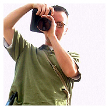
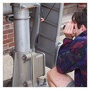

Dean Olufson — Safari CreatorUrban Photo Safari started as an idea between friends to get together and learn about their new digital cameras. We started a contest and called it Urban Photo Safari.
Due to popular demand and getting the word out, it's become a rather large battle of creative minds. The idea is to get a bunch of creative people together with the limitations of time, a geographic boundary and digital cameras.
Here's the details: Meet at 8 a.m. at Latte Land on the Plaza (Nichols Rd location, not 47th St). You have 4 hours to shoot within a given geographic boundary. At the end of the 4 hours, show up and we will download ALL of your photos. You then have 1 week to pick your ten best. These will then be put online for voting. You have ten votes and cannot vote on your own.

Eric Diebold — Safari Co-creatorThe one with the most votes wins: the admiration of others, an Urban T-shirt and a $25 gift certificate to Amazon.com. No matter if you win or not, you get a CD (or DVD) with all contestants' photos to use royalty free. Only contestants get the discs and, when you enter, you sign a waiver releasing rights to each contestant.
This contest is digital only. No film cameras and the minimum resolution allowed is 640×480. Take as many photos as you want; the only required photo is a self portrait of some kind. Contestants may enter as a team using one camera, but only one prize will be given.
The results have been fantastic and a total blast. The cost is free and it's open to anyone who has a digital camera, a few hours, and the willingness to get creative.
The 2004 Safari was held on Saturday, May 22.